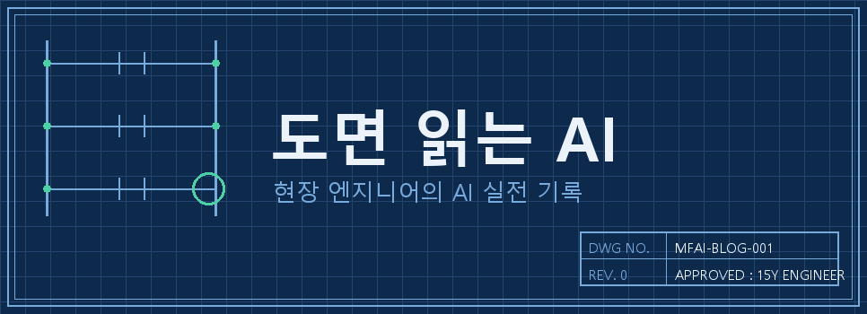
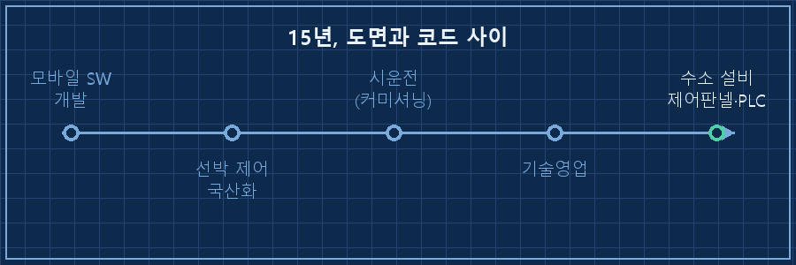
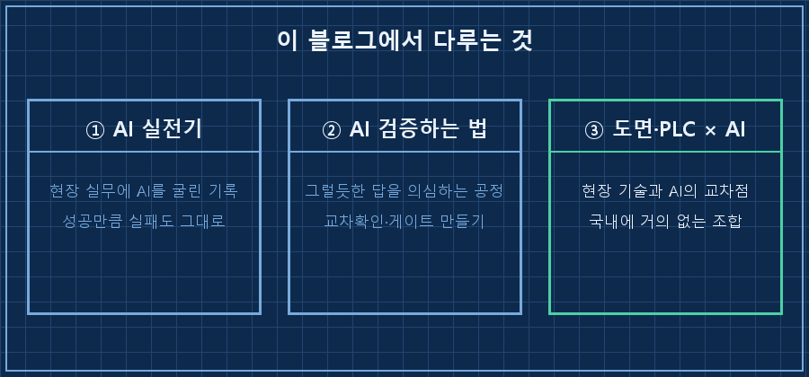

AI 요즘 많이들 쓰시죠? 하다못해 초등학생도 숙제를 AI로 하는 시대잖아요.
근데 현장 엔지니어가 AI를 쓴다고 하면 다들 갸웃해요. 공장, 설비, 도면, PLC 그런 일이요.
"그건 사무직 얘기지, 우리 일엔 못 써요."
저도 그런 줄 알았거든요.
이 블로그는 그 생각이 틀렸다는 걸 몸으로 확인해온 기록이에요. 현장 엔지니어의 AI 활용, 그 경험담과 시행착오를 기록하고 공유하고 싶습니다!

1. 별걸 다 하면서 살아왔어요
저는 15년차 제어 엔지니어예요.
시작은 휴대폰 소프트웨어 개발이었어요.
그러다 선박 제어 시스템을 국산화하는 일로 옮겼고,
배를 타고 다니면서 시운전도 했고,
기술영업으로 고객 앞에도 서봤고,
국책과제 보고서도 써봤어요.
지금은 수소 설비의 제어판넬을 설계하고 PLC 코드를 짜는 게 일이에요.
참 별걸 다 하면서 살아왔네요..

근데 돌아보면 공통점이 하나 있어요.
도면과 코드 사이, 설계와 현장 사이 어딘가에 늘 서 있었다는 거예요.
그 자리에서 AI를 만났어요.
2. 어쩌다 AI를 '파트너'라고 부르게 됐냐면
처음엔 다들 하는 것처럼 문서 정리나 시켜봤어요.
근데 이게, 쓰면 쓸수록 물건이더라고요.
지금은 도면 검토를 시키고, IO 리스트를 대조시키고, 보고서 초안을 뽑고, 판넬 검수 시스템까지 같이 만들어요.
작업 이력과 피드백을 전부 파일로 쌓아놔서, 제 AI는 '아' 하면 '어' 하는 파트너거든요.
근데 여기서 여과 없이 말할게요.
이 파트너, 그럴듯한 거짓말도 해요.
지난달엔 새로 나온 AI 모델이 뭔지 물었더니 "그런 모델은 없습니다"라고 단정하더라고요.
바로 전날 출시된 모델이었는데요.
따져 물으니 이번엔 있지도 않은 출처까지 붙여가며 우겼어요. 같은 질문에 세 번 연속으로 틀렸습니다.
공들여 만든 자동화가 소리 없이 죽어 있던 적도 있어요.
매일 아침 돌아간다고 믿었던 스크립트가, 로그를 열어보니 몇 주째 에러를 내면서 겉으로만 '정상 완료' 도장을 찍고 있었거든요.
성공했다는 보고를 그대로 믿으면 안 되는 거였어요..
그래서 이 블로그엔 자랑만 쓰지 않을 거예요. 뭐가 됐고, 뭐가 안 됐고, 어디서 데었는지까지 그대로 쓸 겁니다.
3. 여기서 뭘 보실 수 있냐면

세 가지예요.
첫째, 현장 실무에 AI를 굴린 실전기요.
성공한 것만큼 실패한 것도 그대로 쓸 거예요. 실패가 보통 더 배울 게 많더라고요.
둘째, AI를 검증하는 법이에요.
AI가 내놓은 그럴듯한 답을 어떻게 의심하고, 어떻게 교차확인하는지.
제조 현장에서 품질을 검사 공정으로 잡듯이, AI 산출물도 공정으로 잡는 방법이요.
셋째, 도면·PLC 같은 현장 기술과 AI의 교차점이에요.
이 조합을 다루는 곳이 국내엔 거의 없더라고요. 그래서 제가 씁니다.
4. 누구한테 필요한 이야기냐면
저 같은 현장 엔지니어분들이요.
그리고 "우리 회사도 AI 도입해야 하나" 고민하는 제조업 분들이요.
얼마 전에 AI 교육을 해달라는 요청을 받아서 두 시간 강의를 해봤어요.
그때 알았어요. 이게 생각보다 진입장벽이 높구나.
쓰는 사람과 못 쓰는 사람의 격차가 이미 벌어지고 있구나.
강의 끝나고 제일 많이 받은 질문이 "그래서 뭐부터 하면 돼요?"였거든요.
그 질문에 답하는 마음으로 쓸 겁니다.
제가 겪은 시행착오가 누군가한테는 지름길이 될 수 있을 테니까요.
다음 글에선 AI가 그럴듯한 거짓말로 저를 세 번 연속 속인 날 이야기를 써볼게요.
규칙을 다섯 개나 넣어놨는데 왜 하나도 안 먹혔는지, 대신 뭘 바꿨더니 잡혔는지요.
여러분은 AI를 어디까지 써보셨나요?
---
현장 엔지니어를 위한 AI 도입·교육 문의: makefield.ai